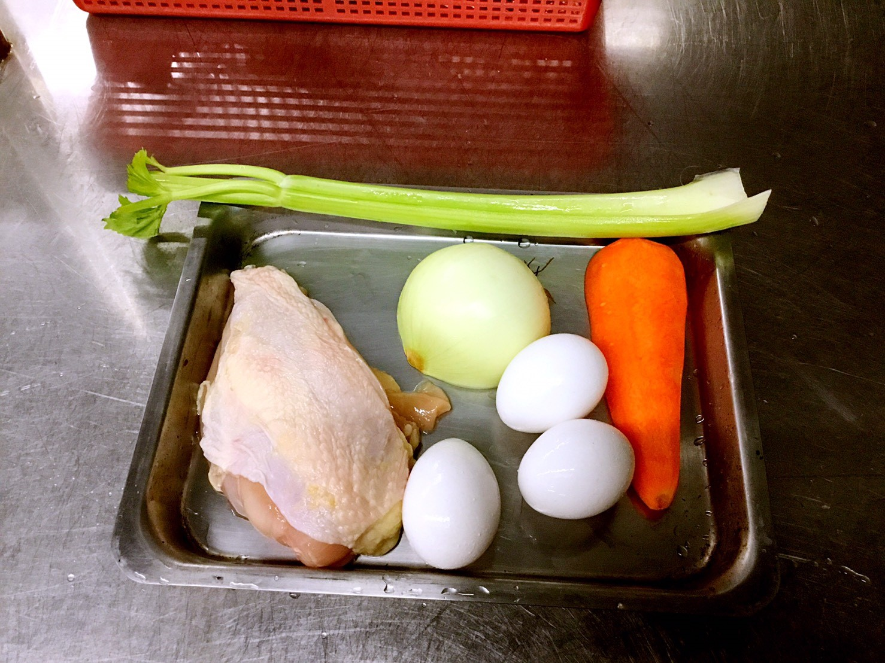

雞肉清湯附蔬菜小丁
火腿乳酪恩利蛋
奶油蘑菇濃湯
西餐美食實作課

雞肉清湯附蔬菜小丁
號碼
材料
重量
01
雞蛋
2顆
02
洋蔥
一顆
03
西芹
一支
04
紅蘿蔔
1/3塊
05
蒜苗
半支
06
雞胸肉
½塊
07
月桂葉
2片
08
胡椒粒
適量
將洋蔥切兩個厚片烤焦備用、其餘洋蔥、紅蘿蔔、 西芹、
蒜苗、所有蔬菜切碎另外雞胸肉剁成泥、再將所有的蔬菜末、
及雞肉泥以及兩顆蛋白伴均勻放入鍋內、開火伴煮至滾後關小火
慢慢烹煮後加入月桂葉兩片少許的胡椒粒以及烤焦洋蔥放入鍋內
煮至湯味道出來，煮至金黃色，雞肉湯味道即可。